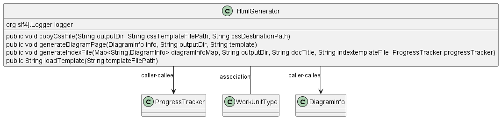

Class Diagram

Annotations
Relationships
| Type | Target | Details |
|---|---|---|
| CALLER_CALLEE | com.pjsoft.j2arch.core.util.ProgressTracker | |
| CALLER_CALLEE | com.pjsoft.j2arch.docgen.pumldoc.util.HtmlGenerator | |
| ASSOCIATION | com.pjsoft.j2arch.core.util.ProgressTracker.WorkUnitType | Field: PUML2HTML_Index |
| CALLER_CALLEE | com.pjsoft.j2arch.docgen.pumldoc.model.DiagramInfo |
Fields
| Visibility | Type | Name | Annotations | Description |
|---|---|---|---|---|
| private | org.slf4j.Logger | logger | Description placeholder |
Constructors
| Visibility | Name | Parameters | Annotations | Description |
|---|---|---|---|---|
| public | HtmlGenerator | Description placeholder |
Methods
| Visibility | Return Type | Name | Annotations | Description |
|---|---|---|---|---|
| public | void | copyCssFile(String outputDir, String cssTemplateFilePath, String cssDestinationPath) | Description placeholder | |
| public | void | generateDiagramPage(DiagramInfo info, String outputDir, String template) | Description placeholder | |
| public | void | generateIndexFile(Map | Description placeholder | |
| public | String | loadTemplate(String templateFilePath) | Description placeholder |